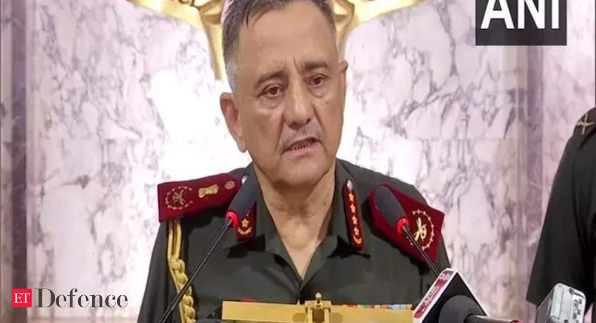

National Security Strategy Must Evolve in Line with Changes in Geo-Political Order
Image Credits https://m.economictimes.com/news/defence/national-security-strategy-must-evolve-in-line-with-changes-in-geo-political-order-cds-gen-anil-chauhan/articleshow/101772531.cms
Published on: The Economic Times
In an ever-changing world, national security strategies play a crucial role in safeguarding a country's interests and protecting its citizens. As geopolitical dynamics continue to shift, it becomes imperative for nations to adapt their security strategies accordingly. The Chief of Defense Staff (CDS), General Anil Chauhan, emphasizes the need for the evolution of national security strategies to align with the changes in the geo-political order.
Adapting to a Shifting Geo-Political Landscape
Throughout history, the global balance of power has constantly been in flux. As new players emerge on the world stage and existing powers realign their interests, countries must revise their security strategies to adapt to the evolving landscape. General Anil Chauhan highlights the importance of staying ahead of the curve by anticipating and addressing potential threats.
The Role of Technology
The rapid advances in technology have significantly influenced the way nations approach their security concerns. From cyber warfare to the development of advanced weaponry, technology plays a pivotal role in shaping the modern security landscape. General Chauhan emphasizes the need for robust cybersecurity measures and investments in cutting-edge defense technology to counter emerging threats.
Multilateral Cooperation
As the world becomes increasingly interconnected, collaboration and cooperation among nations become paramount. General Anil Chauhan stresses the importance of building strong alliances and partnerships to address global challenges effectively. By working together, nations can pool their resources, intelligence, and expertise to enhance their collective security.
Balancing Hard and Soft Power
A successful national security strategy strikes a delicate balance between hard power (military strength) and soft power (diplomacy, cultural influence, etc.). General Chauhan emphasizes the significance of maintaining a multidimensional approach to security, where military capabilities are complemented by strategic relationships, economic diplomacy, and the promotion of cultural values.
Conclusion
The constantly evolving geo-political order necessitates the continuous evolution of national security strategies. As threats become increasingly complex and interconnected, it becomes crucial for nations to stay vigilant and proactive in their approach to security. By adapting to these changes and leveraging advancements in technology, fostering multilateral cooperation, and balancing hard and soft power, nations can navigate the global stage with confidence.
Curated by Team Akash.Mittal.Blog
Share on Twitter Share on LinkedIn